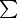
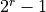
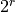
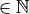
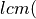
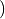
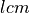
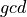
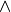
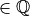

Parameters
All parameters are parsed when setting, so usually several input formats are accepted, e.g.
bool, int, float, str for scalars and additionally list, tuple, ndarray for arrays.
Note that parameters might have circular dependencies which are resolved automatically, hence dependent parameters might change as well.

Parameters and their Interdependencies.
Video Shape
Standardized shape (T, Y, X, C) of fringe pattern sequence, with
T: number of framesY: height (in pixel units)X: width (in pixel units)C: number of color channels
T depends on the paremeters M, H, D, K, N and the multiplexing schemes activated:
If all N are identical, then T = M * H * D * K * N, with N as a scalar,
else T = M * H  N, with N as an array.
If a multiplexing scheme is activated, T reduces further.
The length L is the maximum of X and Y and denotes the length (in pixel units) to be ancoded.
It can be extended by the factor alpha.
C depends on the coloring and multiplexing schemes activated`.
size is the product of shape.
Coordinate System
The following coordinate systems can be used by setting grid to:
image: The top left corner pixel of the grid is the origin (0, 0) and positive directions are right- resp. downwards.Cartesian: The center of grid is the origin (0, 0) and positive directions are right- resp. upwards.polar: The center of grid is the origin (0, 0) and positive directions are clockwise resp. outwards.log-polar: The center of grid is the origin (0, 0) and positive directions are clockwise resp. outwards.
D denotes the number of directions to be encoded.
axis is used to define along which axis of the coordinate system (index 0 or 1)
the fringe pattern is shifted if D = 1.
angle can be used to tilt the coordinate system. The origin stays the same.
Set
Each set consists of the following attributes (cf. black box in above Figure):
N: number of shiftsl: wavelength (in pixel units)v: spatial frequency, i.e. number of periods (per screen lengthL)f: temporal frequency, i.e. number of periods to shift over
Each is an array with shape (number of directions D, number of sets K).
For example, if N.shape = (2, 3), it means that we encode D = 2 directions with K = 3 sets each.
Changing D or K directly, changes the shape of all set attributes.
When setting a set attribute with a new shape (D', K'),
D and K are updated as well as the shape of the other set attributes.
If a set attribute is 1D, then it is stacked to match the number of directions D.
If a set attribute is 0D i.e. a scalar, then all values are simply replaced by the new one.
l and v are related by l = L / v.
When L changes, v is kept constant and only l is changed.
Usually f = 1 and is essentially only changed if frequency division multiplexing FDM is activated.
reverse is a boolean which reverses the direction of the shifts (by multiplying f with -1).
o denotes the phase offset, which can be used to
e.g. let the fringe patterns start (at the origin) with a gray value of zero.
Coloring and Averaging
The fringe patterns can be colorized by setting the hue h to any RGB color tuple in the interval [0, 255].
However, black (0, 0, 0) is not allowed.
h must be in shape (H, 3)`:
H is the number of hues and can be set directly; 3 is the length of the RGB color tuple.
The hues h can also be set by assigning any combination of the following characters as a string:
r: redg: greenb: bluec: cyanm: magentay: yelloww: white
C is the number of color channels required for either the set of hues h
or wavelength division multiplexing.
For example, if all hues are monochromatic, i.e. the RGB values are identical for each hue, C equals 1, else 3.
Repeating hues will be fused by averaging them before decoding.
M is the number of averaged intensity samples and can be set directly.
Multiplexing
The following multiplexing methods can be activated by setting them to True:
SDM: Spatial Division Multiplexing [1]This results in crossed fringe patterns. The amplitude
Bis halved. It can only be activated if we have two directionsD= 2. The number of framesTis reduced by a factor of 2.WDM: Wavelength Divison Multiplexing [2]All shifts
Nmust equal 3. Then, the shifts are multiplexed into the color channel, resulting in an RGB fringe pattern. The number of framesTis reduced by a factor of 3.FDM: Frequency Division Multiplexing [3], [4], [5]Here, the directions
Dand the setsKare multiplexed. Hence, the amplitudeBis reduced by a factor ofD*K. It can only be activated ifD> 1 orK> 1. This results in crossed fringe patterns ifD= 2. Each set per direction receives an individual temporal frequencyf`, which is used in [temporal demodulation](#temporal-demodulation) to distinguish the individual sets. A minimal number of shiftsNmin2 *fmax+ 1 is required to satisfy the sampling theorem andNis updated automatically if necessary. If one wants a static pattern, i.e. one that remains congruent when shifted, setstatictoTrue.
SDM and WDM can be used together [6] (reducing T by a factor of 2 * 3 = 6), FDM with neighter.
By default, the aforementioned multiplexing methods are deactivated,
so we then only have TDM: Time Divison Multiplexing.
Data Type
dtype denotes the data type of the fringe pattern sequence.
Possible values are:
booluint8(default)uint16float32float64
The total number of bytes nbytes consumed by the fringe pattern sequence
as well as its maximum gray value Imax are derived directly from it:
Imax = 1 for float and bool, and Imax =  for unsigned integers with r bits.
It limits the offset A and the amplitude B.
The fringe visibility (also called fringe contrast) is V = A / B, where V is within the range [0, 1].
The quantization step size q is also derived from dtype:
q = 1 for bool and  for r-bit unsigned integers,
and for float its corresponding resolution.
Unwrapping
PU denotes the phase unwrapping method and is eihter 'none', 'temporal', 'spatial' or 'FTM'.
See [spatial demodulation](#spatial-demodulation–phase-unwrapping–pu-) for more details.
mode denotes the mode used for [temporal phase unwrapping](#temporal-phase-unwrapping–tpu-).
Choose either 'fast' (the default) or 'precise'.
verbose can be set to True to also receive
the wrapped phase maps  , the fringe orders
, the fringe orders  and the residuals
and the residuals  from decoding.
from decoding.
FTM denotes Fourier Transform Method and is deployed
if K = H = N = 1, i.e. T = 1.
and the coordinate system is eighter 'image' or 'Cartesian'.
Quality Metrics
UMR denotes the unambiguous measurement range.
The coding is only unique within the interval [0, UMR); after that it repeats itself.
The UMR is derived from l and v:
If
l,UMR= l with  being the least common multiple.Else, if
v,UMR=L/
vwith  being the greatest common divisor.Else, if
vl, resp. are extended to rational numbers.Else, if
vl,landvare approximated by rational numbers with a fixed length of decimal digits.
eta denotes the coding efficiency L / UMR.
It makes no sense to choose UMR much larger than L,
because then a significant part of the coding range is not used.
u denotes the minimum possible uncertainty of the measurement in pixels.
It is based on the phase noise model from [7]
and propagated through the unwrapping process and the phase fusion.
It is influenced by the parameters
M: number of averaged intensity samples,N: number of phase shifts,l: wavelengths of the fringes,B: measured amplitude
and the measurement hardware-specific noise sources [8], [9]
quant: quantization noise of the light source or camera,dark: dark noise of the used camera,shot: photon noise of light itself,gain: system gain of the used camera.
DR = UMR / u is the dynamic range of the phase shift coding
and is a measure of how many points can be distinguished within the unambiguous measurement range [0, UMR).
It remains constant if L and hence l is scaled (the scaling factor cancels out).
SNR = L / u is the signal-to-noise ratio of the phase shift coding
and is a masure of how many points can be distinguished within the screen length [0, L).
Again, it remains constant if L and hence l is scaled (the scaling factor cancels out).